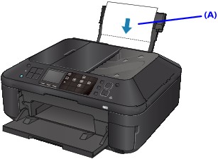

This section explains how to clean the inside of the machine. If the inside of the machine becomes dirty, printed paper may get dirty, so we recommend performing cleaning regularly.
-
Make sure that the machine is turned on.
-
Open the Paper Output Tray gently.
-
Press the Setup button.
-
Select Maintenance, then press the OK button.
The Maintenance screen is displayed.
-
Use the

 button to select Bottom plate cleaning, then press the OK button.
button to select Bottom plate cleaning, then press the OK button.The confirmation screen is displayed.
-
Use the
button to select Yes, then press the OK button. -
Remove any paper from the Rear Tray following the on-screen instructions, then press the OK button.
-
After folding a single sheet of A4 or Letter-sized plain paper in half widthwise, unfold the paper following the on-screen instructions, then press the OK button.
-
Load only this sheet of paper on the Rear Tray with the open side facing to the front following the on-screen instructions, then press the OK button.
(A) Load the paper after unfolding it.
The paper cleans the inside of the machine as it feeds through the machine.
-
When the completion message is displayed, press the OK button.
Check the folded part of the ejected paper. If it is smudged with ink, perform Bottom Plate Cleaning again.
If the problem is not resolved after performing cleaning again, the protrusions inside the machine may be stained. Clean them according to instructions.
 Cleaning the Protrusions inside the Machine
Cleaning the Protrusions inside the Machine Note
Note-
When performing Bottom Plate Cleaning again, be sure to use a new sheet of paper.
-